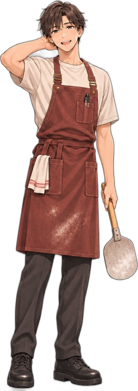
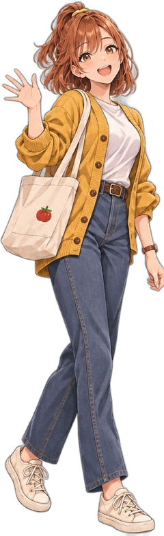
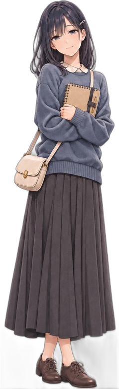
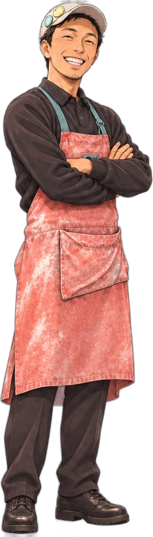

▼
みんなの好感度
ピザ屋バイトと
3人の常連さん
〜 赤いコンテナのお店で始まる、短編ラブストーリー 〜




画面タップで会話が進みます。所要時間は5〜10分ほど。
選択肢で3人の好感度が変わり、結末が分岐します。
初版・再現版（背景は描きイラストのみで再現）
ENDING
〜 赤いコンテナのお店で始まる、短編ラブストーリー 〜




画面タップで会話が進みます。所要時間は5〜10分ほど。
選択肢で3人の好感度が変わり、結末が分岐します。
初版・再現版（背景は描きイラストのみで再現）